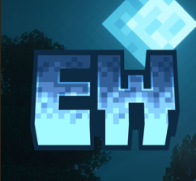

EW';">Minecraft Survival
Начать игратьНа нашем сервере присутствует плагин на эмоции Emotecraft! С помощью этого плагина вы сможете танцевать, сидеть, лежать и многое другое!
emotes.На нашем сервере есть плагин для настройки дистанции, на которую вы можете видеть!
Обычно на сервере стоит прорисовка 14 чанков и симуляция 4 чанка. (СИМУЛЯЦИЯ 4 ЧАНКА ТК ОНА НАГРУЖАЕТ СЕРВЕР НА МНОГО БОЛЬШЕ ЧЕМ ПРОГРУЗКА)
Но когда на сервере остается от 5 до 9 игроков, то прорисовка уходит на 16 чанков, и также остается 4 чанка симуляции.
Да, мы понимаем, что для многих игроков это довольно-таки маленькая прорисовка, но сервер способен выдержать большое количество игроков только с такой прорисовкой. НО не волнуйтесь и не спешите искать новый сервер, так как команда администрации активно ищет способ, как можно поставить прорисовку до 32 ЧАНКОВ!
А сейчас, для тех, кто хочет большую прорисовку, советуем вам такие моды как:
На сервере присутствует плагин на оформленный чат! Теперь все игроки не будут видеть, как ты и твои друзья общаетесь, и тем самым не будут засорять чат!
Написав любое сообщение, его радиус будет распространён на 20 блоков. То есть никто НЕ УВИДИТ его, если будет от вас даже на 21 блок дальше.
А если вы хотите написать в глобальный чат (чтобы все увидели ваши сообщения), то сначала ПОСТАВЬТЕ ! (восклицательный знак, Shift + 1), и тогда весь сервер увидит ваше сообщение!
Также вы можете написать лично игроку в ЛС с помощью команды /msg НИК_ИГРОКА ваше сообщение. Ответить на личное сообщение также можно через команду /r или через /msg по такой же схеме.
Если вдруг у вас на сервере есть неприятели, то вы можете игнорировать их! Просто напишите команду /ignore ИМЯ_ИГРОКА. А если вы отпустили свою обиду и хотите обратно видеть сообщения от игрока, которого заблокировали, то просто напишите команду /unignore ИМЯ_ИГРОКА.
/chathelp в чате.
Плагин, который позволяет вам садиться на ступеньки, полублоки и даже на головы игроков!
Достаточно нажать правой кнопкой мыши по игроку / ступеньке / полублоку.